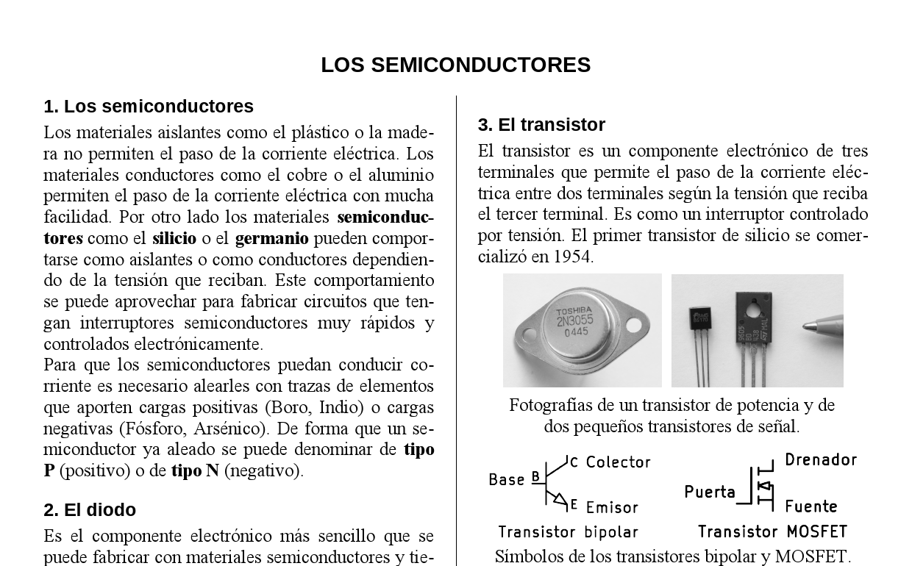
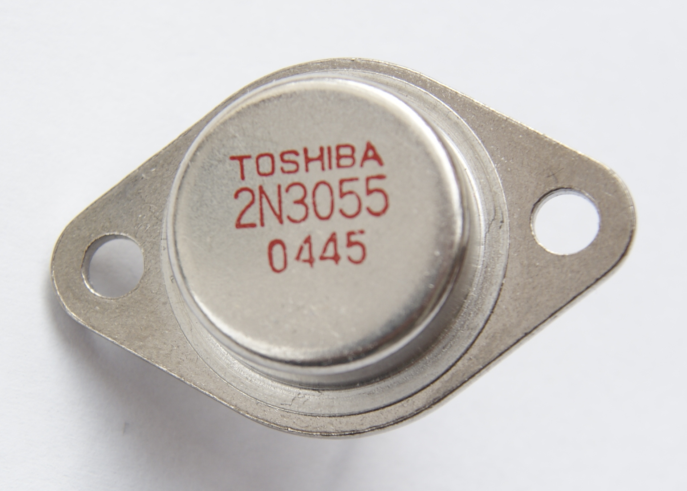
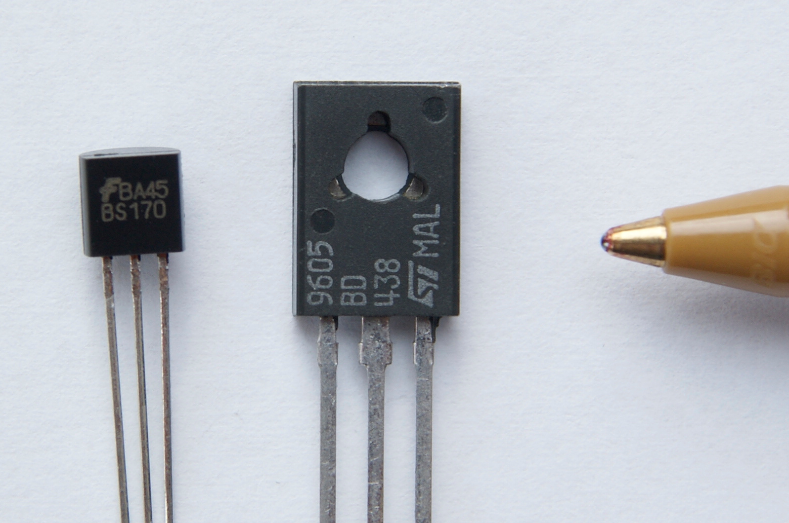
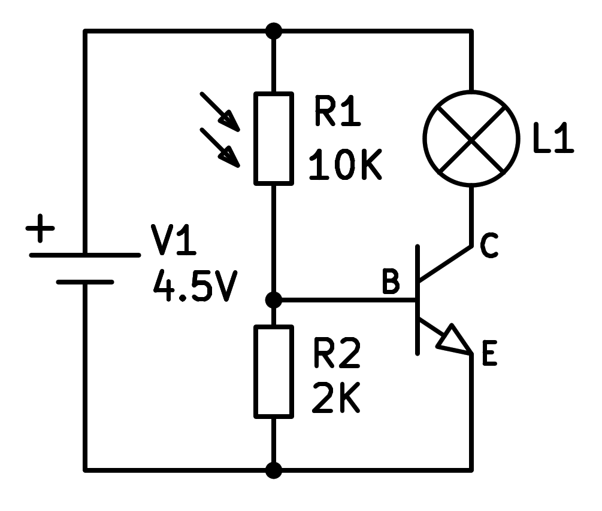
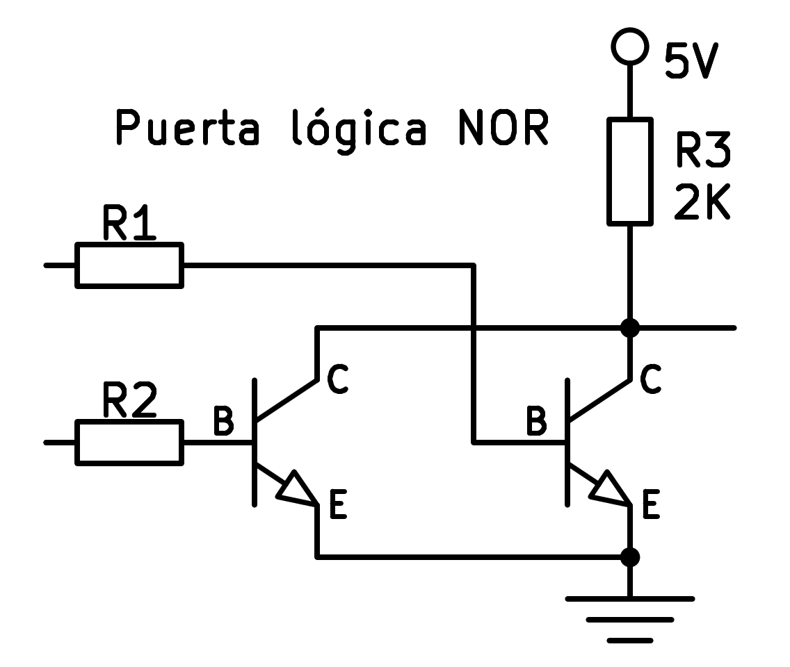
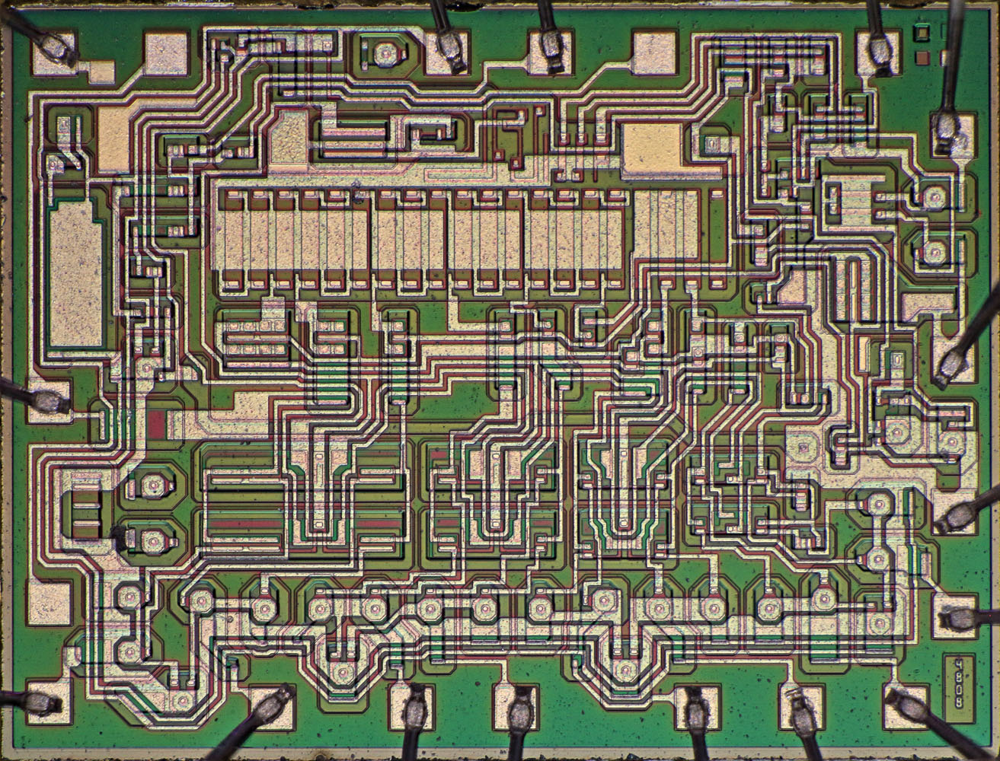
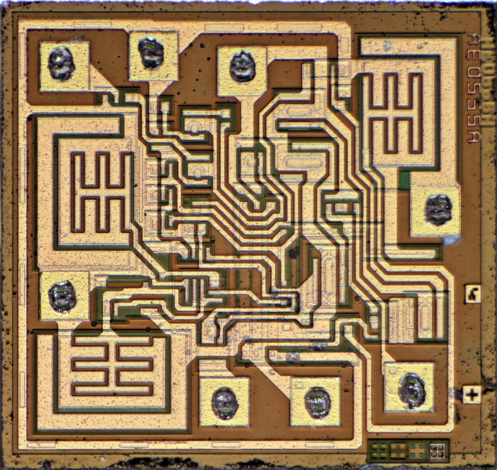

2. Els components semiconductors¶
Semiconductors com els díodes o els transistors són components basats en silici que l'electrònica moderna s'ha desenvolupat fins que tota la nostra societat es transformi.
En aquesta unitat estudiarem els fonaments de components electrònics, el seu funcionament i els esquemes elèctrics típics.

Els semiconductors¶
Materials ** Els aïllants ** com el plàstic o la fusta no permeten el pas del corrent elèctric. Els materials ** conductors ** com el coure o l’alumini permeten el pas del corrent elèctric amb molta facilitat. D'altra banda, els materials ** semiconductors ** com ara ** silici ** o ** Germanio ** es poden comportar com a aïllants o com a conductors segons la tensió que rebin. Aquest comportament es pot utilitzar per fabricar circuits que tinguin interruptors semiconductors molt ràpids i controlats electrònicament.
Perquè els semiconductors puguin conduir, cal aliar -los amb traces d’elements que proporcionen càrregues positives (bor, indi, etc.). o Càrregues negatives (fòsfor, arsènic, etc.) de manera que es pot anomenar un semiconductor ja aliatge ** tipus P ** (positiu) o ** tipus N ** (negatiu).
El díode¶
És el component electrònic més senzill que es pot fabricar amb materials semiconductors i té dos terminals. Internament està format per la unió d’un bloc de silici de ** Type P ** amb un bloc de silici de ** Type N **. Aquesta unió permet que el corrent flueixi en cert sentit, però no li permet fluir en el sentit contrari.
{kind=link}
A la imatge anterior podeu veure el símbol del díode, una fletxa en la direcció en què permet el pas del corrent i el nom dels seus dos terminals. El díode només condueix quan l’ànode té tensió positiva i tensió negativa del càtode.
La imatge següent és una fotografia amb diversos tipus de díodes.
{kind=link}
Els díodes tenen múltiples aplicacions. Per exemple, rectifiqueu el corrent altern, reguleu les tensions o emeten llum (díodes LED).
Esquema d’un díode LED polaritzat amb una resistència que redueix el corrent perquè no es cremi.
{kind=link}
Esquema d’un díode rectificador que converteix la tensió alternativa de la xarxa elèctrica en tensió contínua.
{kind=link}
El transistor¶
El transistor és un component electrònic de tres terminals que permet el pas del corrent elèctric entre dos terminals segons la tensió rebuda pel tercer terminal. És com un interruptor de control de tensió. El primer transistor de silici es va comercialitzar el 1954.
{kind=link}

Transistor de potència¶
{kind=link}

Transistor de senyal.¶
{kind=link}
{kind=link}
Estats transistors¶
Depenent de la tensió de control que el transistor rep per la base o per la porta, es pot trobar en tres estats diferents.
** TALL: ** El transistor no condueix el corrent, es comporta com un interruptor obert.
** Saturació: ** El transistor realitza tot el corrent possible i es comporta com un interruptor tancat.
Els dos estats anteriors s’utilitzen en circuits digitals com un ordinador, TV, telèfon intel·ligent, etc.
** Zona lineal: ** El transistor només condueix part del corrent i es comporta com a resistència.
Aquest comportament s’utilitza en circuits analògics com ara amplificadors de so.
Circuits típics¶
Transistor amplificador. Aquest circuit funciona com a amplificador de llum. Quan s’il·lumina a la resistència a la LDR, augmenta el corrent que el creua. Aquest corrent arriba a la base del transistor i el transistor l’amplifica a través del col·lector, il·luminant la làmpada connectada. Es tracta d’un circuit analògic perquè el transistor funciona en una zona lineal que es comporta com a resistència controlada pel corrent base.
{kind=link}

Transistor amplificador.¶
Transistor digital. Aquest circuit és una porta ni lògica formada per transistors. Gràcies al paral·lel dels dos col·leccionistes, la sortida només té una gran tensió quan les dues entrades són a baixa tensió. Aquestes portes lògiques són la base de circuits i ordinadors digitals.
{kind=link}

Transistor digital.¶
Resistències de LDR¶
La LDR (resistències dependents de la llum) són, com el nom indica, els sensors que detecten llum. La seva resistència es redueix quan la il·luminació és més gran, augmentant el corrent que condueix la major llum que reben.
Símbol i fotografia d’una resistència a la LDR.
{kind=link}
{kind=link}
Circuits integrats¶
Un circuit integrat és una petita píndola de silici, també anomenada xip, que conté molts components electrònics al seu interior.
{kind=link}

Circuit integrat LM555.¶
{kind=link}

Circuit integrat DAC08.¶
Amb el desenvolupament de la tecnologia, la mida dels components es redueix cada any, podent agrupar cada cop més transist en un sol circuit integrat. A principis dels anys seixanta, la indústria aeroespacial va començar a comprar circuits que s’integraven fins a 100 transistors en una sola píndola. Això va fer que els preus de la producció baixessin i fomentessin el desenvolupament de la tecnologia. A principis de 1980 ja podríeu comprar xips amb 100.000 transistors, el 2000 100 milions de transistors i el 2020 100 mil milions de transistors en un sol xip. Aquest creixement exponencial del nombre de transistors integrats en un xip que es dobla cada any i mig es coneix com a llei de Moore i ha permès el desenvolupament de la societat digital que tots sabem, amb molts dispositius intel·ligents, records, càmeres, drons, etc. basats en aquests poderosos circuits integrats.
Exercicis¶
- Quins tipus de materials depenen de la conducta de l’electricitat? Escriviu dos exemples de cadascun.
- Per què els semiconductors són tan útils?
- Què cal fer per a un semiconductor per conduir el corrent elèctric?
- Com es construeix un díode semiconductor?
- Dibuixeu el símbol d’un díode semiconductor i nomeneu els seus terminals.
- Quan un díode condueix actual?
- Dibuixa dos esquemes elèctrics amb díodes.
- Quines aplicacions tenen els díodes?
- Què és un transistor? Quants terminals teniu?
- Quins estats pot tenir un transistor?
- Quins estats de transistor s’utilitzen en circuits analògics? I en els digitals?
- Dibuixa el símbol d’un transistor bipolar i d’un MOSFET amb el nom dels seus pins.
- Dibuixeu un circuit amb un transistor que funcioni com a amplificador de llum.
- Dibuixa una porta ni lògica amb transistors.
- Què és un LDR i què signifiquen aquestes sigles?
- Què és un circuit o xip integrat?
- Quan van començar a fabricar els circuits integrats i quants transistors tenien?
- Dibuixa un gràfic amb el nombre de transistors que conté un xip. A l’eix x situa els anys i l’eix i el nombre de transistors a escala exponencial (10, 100, 1000, 10mil, etc.)
- Què és la llei de Moore?